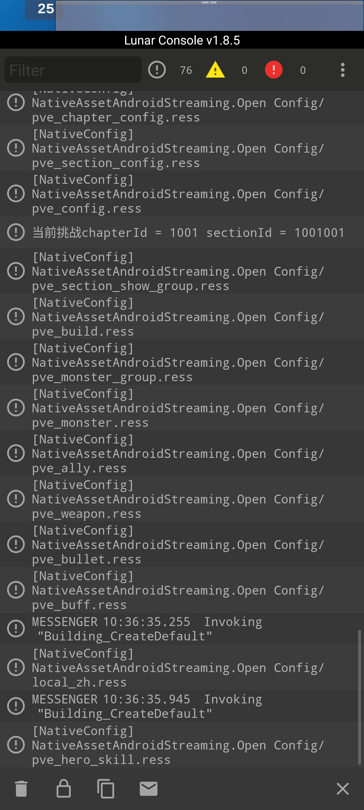
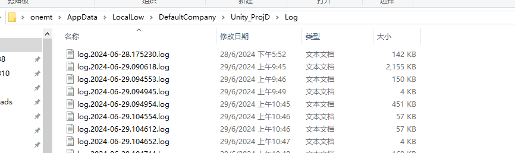
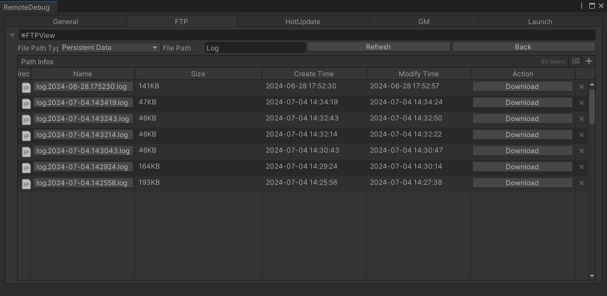
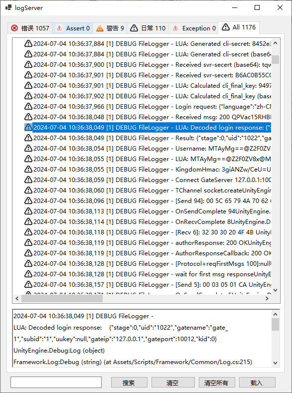

日志
LunarConsole
真机双指从上到下划动屏幕可打开日志界面 
日志文件
使用的是log4net库，每次运行在Application.PersistentPath/Log下以当前时间命名生成一份日志文件 
- Unity Editor中通过菜单【Tools】【Open PersistentPath】进行查看
- 真机上可以通过 菜单【Tools】【Remote Debug】的FTP面板进行查看/下载 
- PC端打开日志查看工具，PD_Client\build_tools\log\logServer.exe，载入日志文件进行查看，支持日志分级查看和过滤 